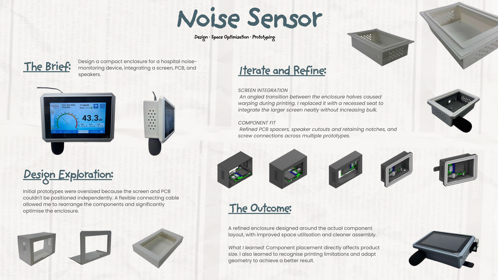
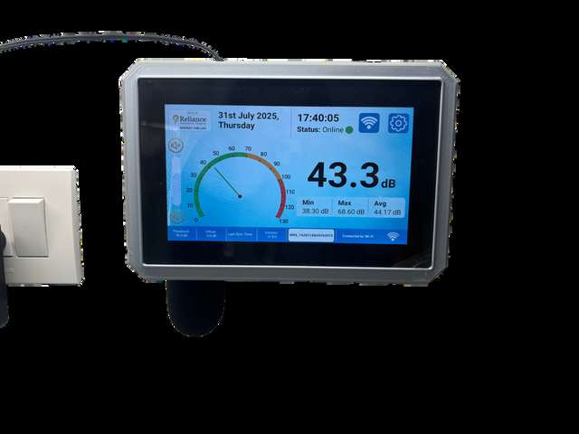
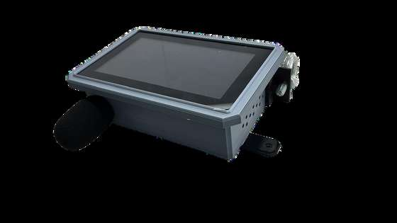

NOISE SENSOR
Design a compact enclosure for a hospital noise-monitoring device, integrating a screen, PCB, and speakers.

THE BRIEF & CHALLENGE
Design a compact enclosure for a hospital noise-monitoring device integrating a screen, main PCB, and alert speakers. Initial prototypes were oversized because the screen and PCB couldn't be positioned independently. Introducing a flexible connecting cable allowed me to rearrange the components and significantly optimise the enclosure dimensions.
ACTUAL PROTOTYPE & CAD LAYOUT


ITERATE AND REFINE
01. SCREEN INTEGRATION
An angled transition between the enclosure halves caused warping during printing. I replaced it with a recessed seat to integrate the larger screen neatly without increasing bulk.
02. COMPONENT FIT & RETENTION
Refined PCB spacers, speaker cutouts, retaining notches, and screw connections across multiple physical iterations to ensure a rattle-free, clean internal fit.
03. RECOGNISING PRINTING LIMITATIONS
Adapted wall geometries and edge fillets to prevent bed warping and shrinkage, ensuring precise mating between the top and bottom clamshell halves.
A refined enclosure designed around the actual component layout, with improved space utilisation and cleaner assembly.
"Component placement directly affects product size. I also learned to recognise printing limitations and adapt geometry to achieve a better result."